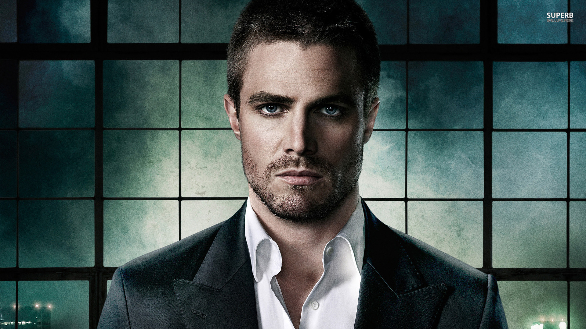

Characters
Main Characters on Arrow
Oliver Queen
Oliver Queen was born on May 16th, 1985 to Robert Queen and Moira Queen. He was bestfriends with Tommy Merlyn who was the son of Malcolm Merlyn. He also befriended Laurel Lance, daughter of Quentin Lance who is a detective at the time. When Oliver and Tommy went into there twenty's they came across some scandals which gave Tommy a bad reputation- a reputation of a playboy. Later on, he went on a cruise ship with Sara Lance Laurel's younger sister (he was going to cheat on Laurel). In the middle of the cruise ship trip, the ship was ambushed and only Robert and Oliver Queen survived. However, on the getaway boat, Robert shot himself so Oliver could survive. Oliver then arrived on an abandoned island called Lian Yu. After five years in Lian Yu, he got out on a fisherman's boat. When he arrived back at Starling City, he was a changed man and became the Arrow. In every episode there are flash backs which show what Oliver went through on the island.
John Diggle
Before John Diggle was Oliver Queen's bodyguard/driver, he was in the army, where he meet his wife, Lyla Michaels. However there work collided and they realized it would be easier if they were divorced. They thought that their work would split them apart anyways so they divorced. Later on, Diggle was hired by Moira Queen to protect Oliver right after he came back from the island. When Oliver became the Arrow, Diggle became suspicious. One day, Deadshot shot Diggle and he was seriously injured with poison in him. The only person who could fix him was Oliver Queen. After Diggle woke up in the Arrow Cave, Oliver offered that Diggle came and joined him as a vigilante.